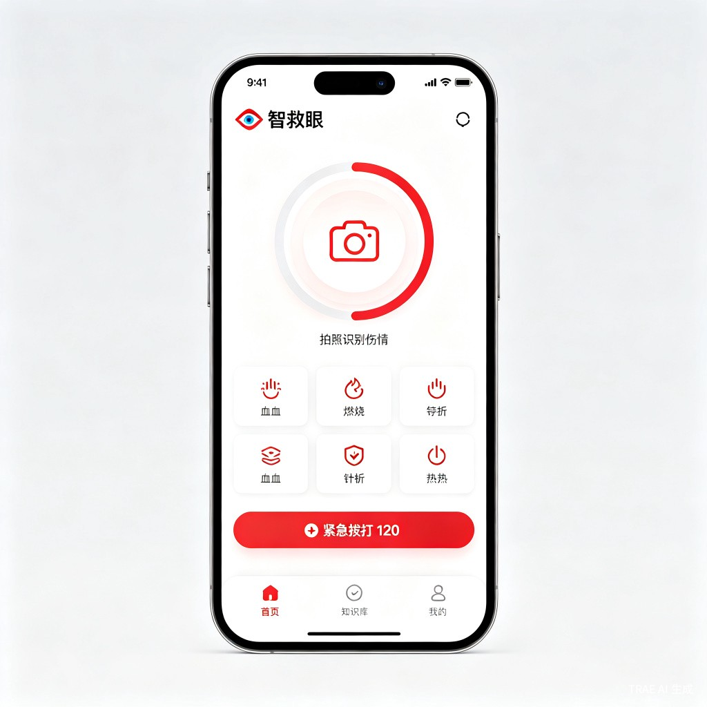
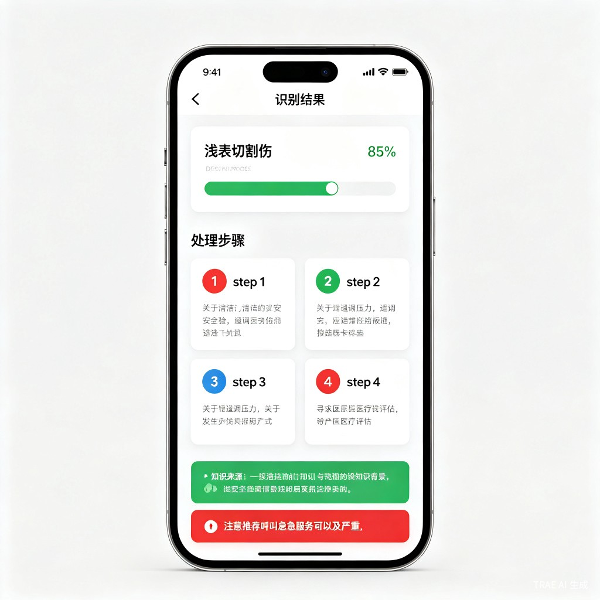

拍照识别伤情，秒级获取权威急救指导
意外伤害随时可能发生，但绝大多数普通人面对突发伤情时，缺乏及时、正确的急救知识和行动能力。
90% 的普通人在意外发生时不知道该做什么。面对切伤、烫伤、骨折等常见伤情，手足无措。
紧急情况下打开搜索引擎搜"手指切了怎么办"，结果鱼龙混杂，难以分辨正误，浪费时间。
烫伤涂牙膏、流鼻血仰头、骨折揉搓……网上流传的急救误区可能加重伤情，甚至造成二次伤害。
心脏骤停每延迟 1 分钟，存活率下降 7-10%。黄金 4 分钟内无人施救，生存率趋近于零。
面向普通公众的 AI 急救指导 Web 应用。打开网页，拍一张照，即可获得来自权威医学指南的标准急救操作指导。
对准伤情拍照或上传图片
识别伤情类型，匹配知识库
给出清晰的标准操作步骤
所有急救知识均来自权威医学指南（中国红十字会、AHA、中华医学会），AI 仅做图像识别和知识匹配，不自行生成任何医疗建议。当识别置信度较低或情况不明时，系统将第一时间建议用户拨打 120 就医。
以下为产品概念设计界面，展示核心交互流程。（实际界面以 Demo 为准）

首页 — 拍照识别入口

识别结果 — 分步急救指导
采用分层架构设计，确保识别准确性、知识权威性和系统安全性。
HTML / CSS / JS 响应式 Web 应用，移动端优先
多模态大模型图像识别，限定输出预定义伤情类别
语义检索 + 规则引擎，匹配权威急救方案
中国红十字会 / AHA / 中华医学会急诊医学分会
智救眼在易用性、权威性、响应速度和安全机制上全面超越现有方案。
| 对比维度 | 现有方案 | 智救眼 AI-RescueEye |
|---|---|---|
| 使用门槛 | 需要提前学习 / 下载 App | 打开网页拍照即用 |
| 知识来源 | 搜索引擎结果混杂 | 权威医学指南，来源可追溯 |
| 响应速度 | 搜索 + 筛选需数分钟 | 拍照识别秒级响应 |
| 指导形式 | 长篇文字，难以快速执行 | 分步骤图文，紧急时刻易操作 |
| 安全机制 | 无 | AI 不生成建议，低置信度劝告就医 |
| 目标用户 | 医疗专业人员 / 已学习者 | 零基础普通公众 |
用 AI 技术降低急救门槛，让权威急救知识触手可及，在关键时刻挽救生命。
黄金 4 分钟内的正确急救，可能挽救一条生命。智救眼让每个普通人都能在紧急时刻做出正确反应。
所有指导均来自权威医学指南，从源头杜绝网络急救谣言，避免错误操作造成的二次伤害。
通过日常使用场景，潜移默化地提升公众急救素养，推动"人人学急救、急救为人人"。
"祝贺你——你已经向掌握'救人一命'的技能迈出了第一步。"—— 中国红十字会急救掌上学堂